← 返回阅读库 · 原论文目录
论文讲解阅读文档 · 新模型 · v083
XCiT Cross-Covariance Image Transformers[2106.09681]
视频时长 00:10:16；讲解文字 5,184 字符；提取讲解画面 16 张。按视频原顺序阅读，每段文字保留时间戳。
文字来自整段视频的自动语音转写，按自然停顿分段，并与 PPT / 论文页面 / 演示画面对齐。未将讲解压缩为摘要；术语、数字和口述公式请结合画面及原论文核对。 阅读稿已校正规范部分明确术语误识别；原始逐字稿和每处修改记录另行保留。
讲解画面为源视频截图（640×360），不是可编辑 PPT 文件。全片按每秒 2 帧扫描内容变化，逐步展开页保留；连续动画保留代表画面。清晰度受源视频限制。
下载完整资料包 · 含离线 HTML、PDF、Word、全部 PPT 画面和字幕。
原论文与材料
XCiT: Cross-Covariance Image Transformers · 下载完整 PDF（18 页）
按时间阅读
00:00:00–00:00:38 · 画面 001
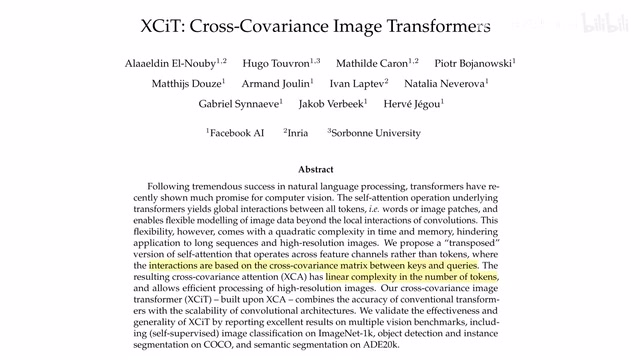
00:00:00–00:00:38 · 画面 001大家好啊，今天我们来快速数一篇论文，Cross Covariance Image Transformers，又是一个 Image Transformers。本来呢，这篇文章是不太想介绍的，但是呢，你看到这个缩写，你会惹得这个缩写啊 excite，那这就不得不介绍了，对吧？那这篇论文的核心贡献呢，就是通过这个 Cross Covariance Matrix，用它呢来计算这个 keys 和 queries 之间的这个 attention，相当于一种新的 attention 机制那么它相对于原来 ON 方的这样的一个 Multi-Head Self-Attention 呢，它是一个线性复杂度的，就是 ON 复杂度的一个 Attention 的计算。那么下面我们来看这个模型是怎么样构建起来，到这里呢，就是作者提出的 XCiT，它里面的这个 block 的结构。那对比 Vision Transformer 来讲，Feed-Forward Network FFN 这个就是几层 MLP，大家都有的，那没有什么区别。那么本文的核心贡献呢，就是使用这个 Cross Covariance AttentionXCA
00:00:38–00:00:39 · 画面 002
00:00:38–00:00:39 · 画面 00200:00:39–00:01:24 · 画面 003
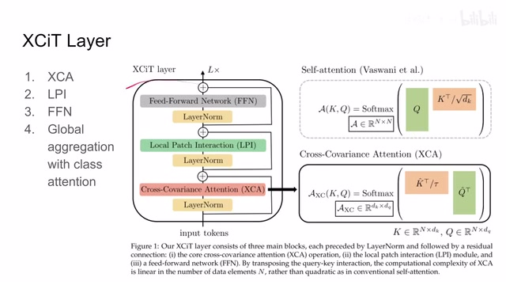
00:00:39–00:01:24 · 画面 003和 local patch interaction LPI，他们两个一起把我们原来的 self-attention 给它替换掉了。那么我们之后会详细的介绍 XCA。那么此外，相对于经典的 Vision Transformer，作者还使用了 global aggregation with class attention，但是这个概念不是本文最先提出来的，只是一个应用。那么关于他的论文，我们会在之后的视频中做一个简单的介绍，好的。那么我们先看到 XCA
00:01:24–00:03:24 · 画面 004
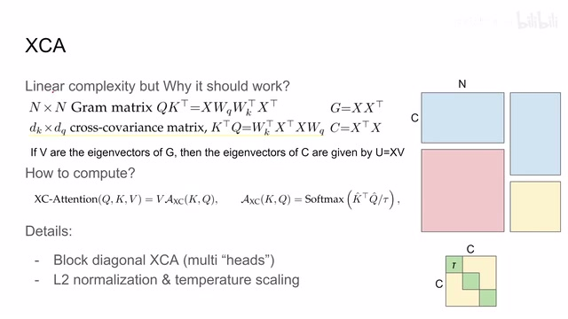
00:01:24–00:03:24 · 画面 004XCA 的最大的特点呢，就是它是 linear complexity。那么它为什么能够 work 呢，这里呢，作者给了我们一个理论上的解释。那么我们看到传统的这个 self-attention 呢，它的结构呢是这样的，你的输入 X 做线性变换得到 query，得到 key，然后呢，把它们这样乘起来，这样乘起来的结构呢，得到一个 n 乘 n 的这个是一个格拉姆矩阵，因为呢，你这里的 X 和 X transpose 呢是在这个矩阵乘法的两侧啊，他是一个形如这样的矩阵。那么显然呢，随着你的 token 的数量也就是 n 的增加呢，他的复杂度呢是 n square 的。而这个 cross covariance matrix 呢，他是把这个 key 和这个 query 他的乘法的顺序呢给他颠倒了一下，那这个颠倒之后呢，他的内部呢就变成这个样子，他的内部呢就形成了一个形如这样的一个 x 的关系
那么矩阵乘法的顺序一颠倒得到矩阵呢，尺寸呢也就变化了。那么那么这里呢，得到这个 cross covariance matrix 呢，它的 dimension 呢就是 k 的 dimension 乘以这个 q 的 dimension。那么这两个值呢，显然是你可以人工指定的是一个定值。那么在这里作者为什么认为说这个 cross covariance matrix 能够替换这个格拉姆矩阵呢，那是因为这两个矩阵呢，它们的特征向量存在一定的关系那假如说一个 v 是格拉姆矩阵特征向量，那么这个 cross covariance 它的矩阵的特征向量呢，就可以通过这样的方式呢给它批计算出来。那么作者认为这种数学关系呢，就可以帮助我们在另一种形式下构建这个 attention 关系。在这里呢，我做一个简单的图，啊，假如说我们的输入的矩阵呢，是一个这个 c 乘以 nc 呢，是我们的 channel 的深度吧，n 呢，是我们 token 的数量
显然这个 C 是你选定的，然后这个 N 呢，N 呢是根据图像的尺寸来定的。那么假如说我们是做这个 self attention，那乘出来呢，它就是一个 N 乘 N 这么大小的一个矩阵，要计算这样一个矩阵的计算量。但是假如说我们做的是这个 cross covariance 呢，它就是这样大小一个计算量，很直观的一个对比啊，特别是当 N 特别大的时候。那么接下来我们看具体怎么样计算这个 XCA，那其实跟我们的 self attention 很像
00:03:24–00:05:12 · 画面 005
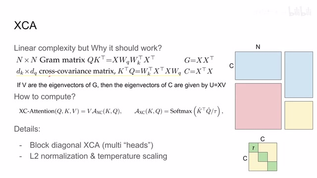
00:03:24–00:05:12 · 画面 005本质上呢是这个 key 和 query 它们的矩阵相乘但是这里呢区别 selfattention 首先第一点是你可以看到呢这里有一个套这个套呢我们叫做 temperature 它是一个可学习的这么一个变量用它呢来帮助我们控制 attention 分布的情况这也是一个非常常见的技术了同时呢你也注意到这个 key 和这个 query 它这里呢用的是 keyhat 和这个 queryhat 那为什么有这个 hat 呢是因为这里呢作者做一个 L2 normalization 也就是说呢我们这个 K 矩阵和这个 Q 矩阵它沿着这个 n 的这个轴我们做了一个 L2 normalization 那得到这样矩阵呢叫做 key hat 这个 Q hat 那么当然这个矩阵呢因为和 self attention 它的尺寸不一样那么显然你把它和我们的 value 的矩阵在组合的时候呢它们的相对位置呢你要调换一下那么这个呢就是 Xc 就是 cross covariance attention 那么此外呢我们还要注意到
作者这里计算的 attention 它不是对所有的 channel 都有 attention 的它是把 channel 分成几组然后每一组计算它们的 attention 那么这样一来我们以这里为例子假如说原来我是要计算 C 乘 C 这样的一个大的矩阵我现在只需要计算三个小的绿色的矩阵就可以了那么这种分块就被作者称为 XCA 中的 multiheads 你从面积上就可以看到它对于计算量的节省是显而易见的而且更灵活的是你的每一个分块使用的都是不同的套这样子这几个小的 block 就相互各自独立了那么以上就是本文提出的最核心的 cross-covariance attention 它的机制那么这里我们来对着作者的代码给它再梳理一遍你看这个 block 的输入第一个维度是 batch 第二个是 token 的数量 n 第三个就是每个 channel 的深度过 linear layer 计算出 query key 和 value 来
00:05:12–00:06:22 · 画面 006
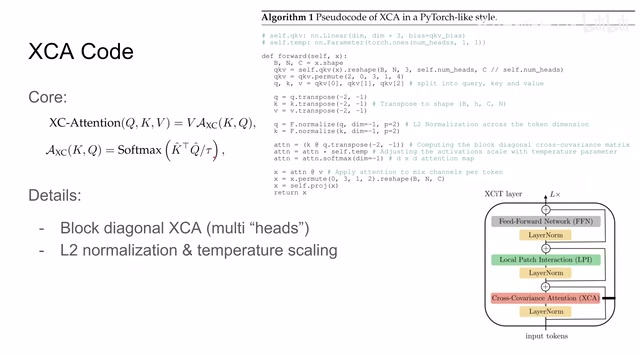
00:05:12–00:06:22 · 画面 006然后呢开始分块我们有多少个 heads 呢就把这个 channel 分成多少个组那么一个 channel 呢就是这个 c 除以这个 heads 数量这样子的一个块那么我们最后把 query key 和 value 解出来然后呢做这个 normalization 做完之后呢就可以做我们经典的这个矩阵乘法这个 attention 那么乘起来之后呢做那么乘起来之后呢记得和这个对应的 temperature 再乘一下那最后呢做一个 softmax 这样的 attention map 呢就出来了注意呢这里的维度呢就是 d 升 d 的也就是每一个小的 block 的尺寸那么这个小 d 呢乘上这个 heads 的数量呢就是得到我们的这个 c 整个 channel 它的数量那么最后呢我们再加上 value 把它变形回原来的 token 的形状然后再过一层 linear layer 就可以了那么接下来呢我们来再看过完这个 xca 之后剩下的 lpi 和 ffn
00:06:22–00:07:12 · 画面 007
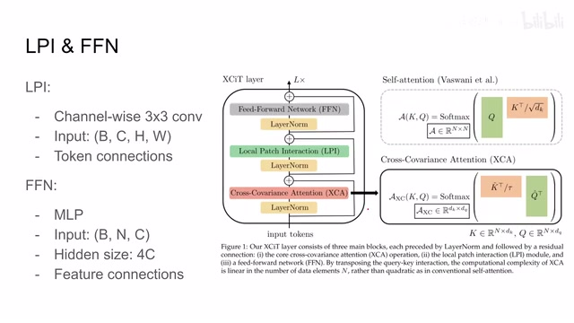
00:06:22–00:07:12 · 画面 007那么 lpi 呢其实是非常好理解的它的本质呢其实就是 channelwise 3x3 的这个 convolution 那么你再把 xca 输出的 tensor 它的形式呢是这个 bnc 这样的一个尺寸把它变形成这个 bchw 也就是 batch channel 高度和宽度这样一个形式之后呢然后呢做这个 channelwise convolution 也就是每一个 channel 单独来做这个 convolution 那么在这样一层操作中呢相当于我们在 token 之间建立了相对联系
而不同的 feature 之间或者不同的 channel 之间它们并没有联系它其实也是透露了我们之前拆分 convolution 的思想包括在 Mixer MLP 里面其实都是这种思想就是 tokenwise connection 和 featurewise connection 我们可以单独做那像这个 XCA 处理完这个 feature wise 的东西呢，那我这个 lpi 呢就开始处理 token wise 这样的东西。那么这样一结合呢，其实就可以替换我们的 selfattentionselfattention 毕竟是各层次的连接都有的嘛。那么过完这个 lpi 之后呢，我们把这个输出呢重新整形为 BNC 的形式。那么然后呢，过这个 FFN，它呢就跟我们的 vision transformer 是一样的了。那么它的本身呢，也是一种 feature connections。那么你把这三个模块组合起来呢，就构成了我们 XCiT 的一个 block。
00:07:12–00:07:13 · 画面 008
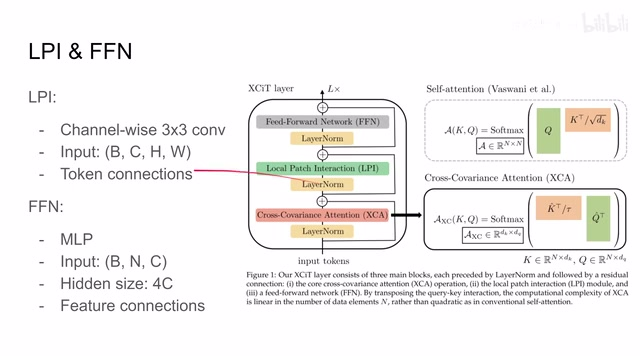
00:07:12–00:07:13 · 画面 00800:07:13–00:07:40 · 画面 009
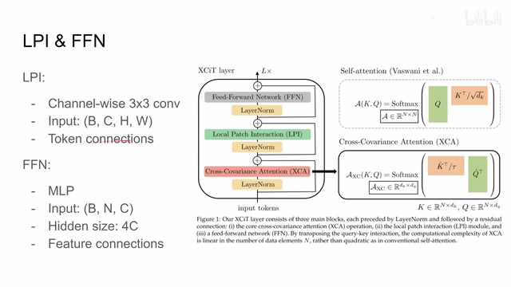
00:07:13–00:07:40 · 画面 009你把这个 block 重复很多次就可以最终组成我们的模型了。但是在这个模型中呢，我们应该注意的是前面这几层呢，我们是没有这个 classification token 那为什么呢？那这就涉及到我们的另一篇论文，这个 sky transformer 其实并不应该这么读啊，但是忍不住啊。那么这篇论文呢，非常简单来说就是我在前面几层 transformer。
00:07:40–00:07:41 · 画面 010
00:07:40–00:07:41 · 画面 01000:07:41–00:07:46 · 画面 011
00:07:41–00:07:46 · 画面 01100:07:46–00:08:46 · 画面 012
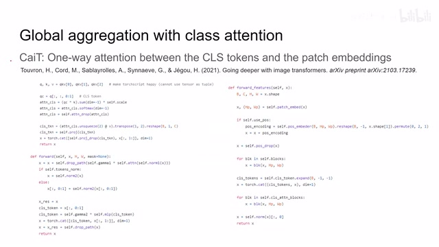
00:07:46–00:08:46 · 画面 012比如说好的 feature 来之后，我再加入 classification token。然后我在计算 attention 的时候呢，是单独计算这个 classification token 和其他 token 之间他们的 attention 的。也就是说，其他 token 之间他们相互的 attention 呢，在这里就变得不重要了。那么我们把这个模块加上这个 skip connection，加上 normalization，加上 mlp 对吧，加上这一堆东西，它呢也是一个形容 transformer 层。那我实际搭建最终一个大的模型的时候呢，首先呢是过我们经典的 transformer。
然后加上我们的 classification token 和前面提取出来这些 token 一起来给它送到单向的 attention 里面，只计算其他的 patch 对于 classification 在它们之间的 attention。那么最后做 Normalization，把我们的 classification 它的 embedding 给它提取出来。然后后面的 MLP 做后面的 classification 就可以了。那么我们最后直接来看到本文作者汇报的结果。那么可以看到，首先 ImageNet，那么它的核心优势就是我处理大图的时候。
00:08:46–00:09:38 · 画面 013
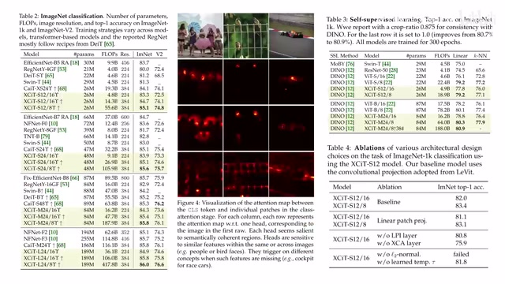
00:08:46–00:09:38 · 画面 013能够得心应手一点。那这个是不同参数量的模型的对比啊。那当然呢，本文这个模型呢，你可以看到它的计算量是非常大的。那这里呢，其实是一个很有意思的 visualization，可以具体看到它的实现的形式。但是这个呢，也不新鲜了，因为我们在 dino 里面已经见过了。虽然呢，他们的研究方向是不同的，而且你看到这里呢，作者使用 dino 呢做了不同的这个 backbone 的这个实验。
那至于为什么选择 DINO，而且这个 Visualization 跟 DINO 非常像呢？因为本文呢，跟 DINO 呢，都是一拨人做的。那这里呢，还有一个简单 ablation 啊，大家可以看一下。那么其实最核心的就是这个 L2Normalization，也就是我对这个 Key 和 Query 他们做的这个 Normalization，它看起来呢，是非常关键的。从这里呢，作者回报一些 Transfer Learning，像这个 Object Detection 啊，Instance Segmentation 啊，还有 Semantic Segmentation 啊，这些如果你感兴趣的话呢，可以仔细来查看一下。
00:09:38–00:09:39 · 画面 014
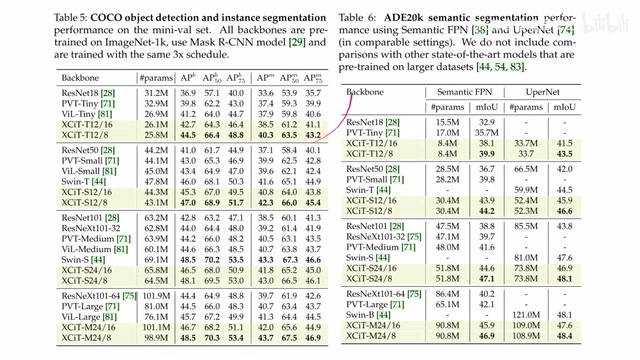
00:09:38–00:09:39 · 画面 01400:09:39–00:10:16 · 画面 015
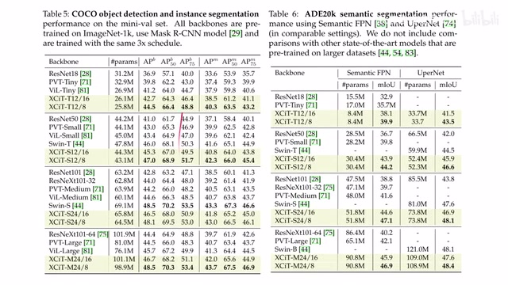
00:09:39–00:10:16 · 画面 015那么总的来说，本文的核心贡献呢，就是提出这个 cross-covariance matrix，用它呢，来替换我们原来的 self-attention。随着 token 数量的增加呢，可以显著节省我们的内存。那当然代价呢，是计算量也很大。但是呢，曲子的系统呢，还是能看。那么以上呢，就是我对这篇论文的简单的分析，还是非常推荐你去阅读原文查看它的一些实验设计，包括它幅度里面附的很多的实验的细节。那么感谢您的收看，再见。
00:10:16–00:10:16 · 画面 016
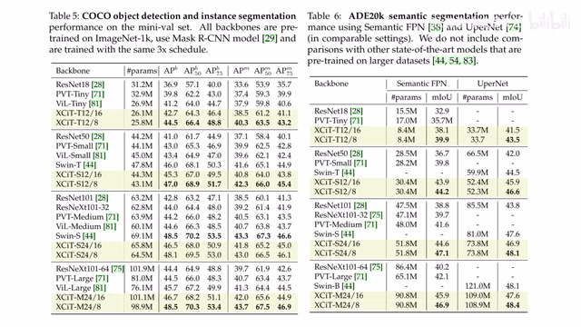
00:10:16–00:10:16 · 画面 016转写与来源说明 · 0 个自动复核提示
保留 23 个原始语音片段，0 个片段触发自动复核提示。提示仅用于定位可能的术语、重复或识别问题，不等于已确认错误。
讲解画面为源视频截图（640×360），不是可编辑 PPT 文件。全片按每秒 2 帧扫描内容变化，逐步展开页保留；连续动画保留代表画面。清晰度受源视频限制。
原视频：paper/合集_2026-10-16_新模型/[论文简析]XCiT Cross-Covariance Image Transformers[2106.09681].mp4
SHA-256：1e611372543ea4129dd8a849fb032c9e122ac3f0d58559a03f0fc12674bede10
全文按视频语音与画面制作。原论文可从上方链接下载；完整资料包保留全文、原始逐字稿、字幕和校对记录。